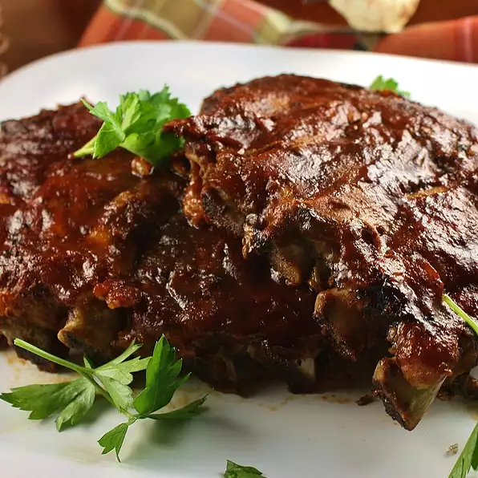

Slow Cooker Baby Back Ribs

Ingredients
- 3 pounds baby back ribs, trimmed
- salt and ground black pepper, to taste
- ½ onion, sliced
- 1 clove garlic, minced
- 1 (18 ounce) bottle barbeque sauce
Directions
- Season ribs with salt and pepper.
- Pour 1/2 cup water into the slow cooker.
- Add ribs to slow cooker.
- Scatter onion and garlic over top of ribs.
- Cover and cook on Low for 8 hours or High for 4 hours.
- Transfer ribs from the slow cooker to a baking sheet convex side up.
- Discard onion and garlic.
- Broil ribs until meat's surface is lightly browned.
- Remove ribs from broiler and apply layer of sauce.
- Return ribs to broiler until sauce caramelizes.
- Remove ribs from broiler and apply 2nd layer of sauce.
- Return ribs to broiler until sauce caramelizes.
- Repeat for 3rd layer
- Remove ribs from boiler and serve.